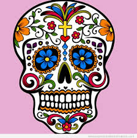

Festividada de dia de muertos
¿Que se celebra?
- Es una festividad que se celebra en México y algunos paises de America Central
- Este culto hacia la muerte se celebra desde aproximadamente 1800 a.c
- El Día de Muertos es considerado la tradición más representativa de la cultura mexicana. La celebración se lleva a cabo en dos días: el 1 de noviembre es dedicado al alma de los niños y el 2 de noviembre a la de los adultos.
El origen del Día de Muertos tiene antecedentes relacionados con el mestizaje. Comprende rasgos culturales indígenas y españoles que al mezclarse dieron lugar a todos los ritos y ceremonias que se realizan alrededor de la festividad.
Aunque la celebración anglosajona de Halloween se ha popularizado entre la población, en la mayoría de los hogares mexicanos la tradición perdura y se colocan ofrendas con elementos muy particulares.

